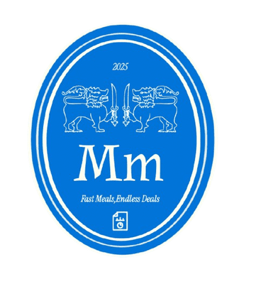
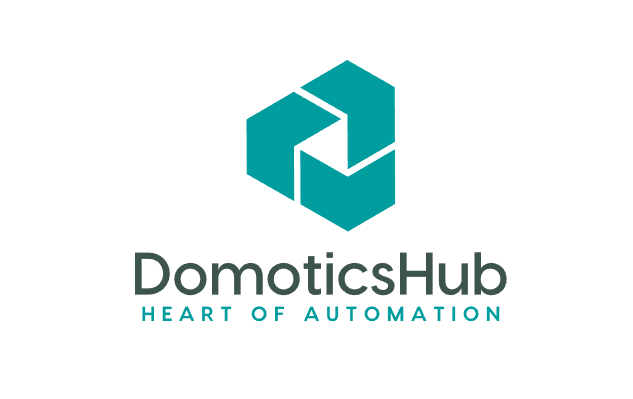

Profile
I'm a final-year B.Tech Computer Science Engineering student at VIT Vellore. I enjoy turning ideas into working software, and most of what I've learned has come from building projects end to end and seeing where they break.
I've worked across full-stack web development, computer vision and machine learning, backend and cloud systems, and embedded electronics. In 2026 I interned at AMTRON, a Government of Assam IT undertaking, on live e-governance applications.
Ranked #413 All India in VITEEE 2023. Currently looking for a software engineering role where I can keep building systems that people actually use.
Back to homepageExperience
Software Development Intern — AMTRON
- Worked on live e-governance applications used by several Government of Assam departments, as part of an established engineering team.
- Took work through the full cycle — requirements, implementation, testing, debugging and delivery — and reported progress to project stakeholders.
- Saw how large, government-grade systems are actually built and shipped, which is a very different set of constraints from a personal project.
Projects
A few things I've built. More on my GitHub profile.
TreadCheck
My own project · live web application
A smartphone-based tyre-condition screening system using computer vision and machine learning. You photograph a tyre and it tells you whether the surface shows signs of wear, cracking or perished rubber.
- Started from a classical computer-vision approach and built the full pipeline, model, web app and deployment myself.
- While testing it, I found that one of the original features was reacting strongly to image resolution rather than to the tyre itself.
- That finding led me to change the pipeline and simplify the model, and the system was then deployed as a working web application.
Built with: Python, OpenCV, scikit-learn, SVM, GLCM/LBP features, Vercel
It screens surface condition from a photograph. It does not measure tread depth in millimetres, certify roadworthiness, or replace a qualified tyre professional.

MinuteMeals
Full-stack food delivery platform
A MERN food-ordering app I built on my own, from the database schema up to the deployed site: menu browsing, cart, orders, live order status, and an admin side for managing menus and watching orders move through their lifecycle.
- Built the REST API backend and a responsive, mobile-first React front end.
- Added an admin dashboard for menu management and order-lifecycle control.
- This was the project where I stopped thinking in pages and started thinking in state.
Built with: React, Node.js, Express, MongoDB, REST APIs

DomoticsHub
Team project · DomoticDynamos (Jaison, Machum, Jathin)
A home-automation dashboard that brings lighting, climate, security and appliances under one interface, with remote access and energy monitoring.
- Built a single control interface for smart devices across the home.
- Added remote access, energy monitoring and a voice assistant.
Built with: HTML, CSS, JavaScript, React.js, Python, IoT protocols
Autonomous Cloud Cost Governor Agent
Java · cloud simulation
A simulated multi-VM cloud datacenter in Java where an agent watches CPU, RAM and bandwidth telemetry and predicts which workloads are about to become expensive — catching cost problems before the bill rather than after it.
- Instrumented cost telemetry from the simulation into structured CSV data pipelines.
- Built a Cost Failure Probability predictor from utilisation signals, plus visualisations of CPU cost and idle-waste trends.
Built with: Java (JDK 17+), CloudSim Plus, Maven, Python, Pandas, Matplotlib
Real-Time Precision Cooling System
Arduino · embedded control
A four-mode closed-loop temperature controller (Manual, Linear, PID, AUTO) with tuned PID gains (Kp=8.0, Ki=0.3, Kd=2.0) and anti-windup clamping, driven from a rotary-encoder interface on a 16×2 I2C LCD.
- Implemented a hybrid AUTO mode that switches control strategy based on how far off target it is.
- This is where I learned that control loops behave nothing like the textbook diagram until you tune them yourself.
Built with: Embedded C++, PID control, DS18B20 sensors, MOSFET drivers, I2C
Cross-Lingual Semantic Role Labeling
NLP · zero-shot transfer
Labelling who did what to whom in a sentence, in languages the model was never trained on, using zero-shot transfer. An experiment in how far you can get with no target-language training data.
Built with: Python, NLP, multilingual transfer learning
Education
Vellore Institute of Technology (VIT), Vellore, Tamil Nadu
B.Tech, Computer Science and Engineering (Core) · 2023 – 2027 (Expected)
Noonmati Public School — Guwahati, Assam
Higher Secondary, Class XII · 2023
Manas Valley Academy — Barpeta Road, Assam
Secondary, Class X · 2021
Technical Skills
Languages
- Java
- Python
- C++
- C
- JavaScript
- SQL
Frontend
- React.js
- HTML5
- CSS3
- Responsive UI
Backend & Databases
- Node.js
- Express.js
- REST APIs
- MongoDB
- JSON
Machine Learning & Computer Vision
- OpenCV
- scikit-learn
- NumPy
- Pandas
- Matplotlib
- SVM
- Feature Engineering
- NLP
Cloud, Data & Deployment
- Vercel
- Render
- GitHub Pages
- CloudSim Plus
- Data Pipelines
- Telemetry Processing
Embedded & IoT
- Arduino
- Embedded C++
- PID Control
- DS18B20
- I2C
Tools & Foundations
- Git
- GitHub
- Maven
- Postman
- VS Code
- Linux
- MATLAB
- Data Structures & Algorithms
- OOP
- DBMS
- Operating Systems
- Computer Networks
Achievements & Certifications
-
📊 VIT Engineering Entrance Examination (VITEEE)Vellore Institute of Technology · 2023All India Rank #413
-
💼 TECDIA India — Coding ChallengeCompetitive coding challenge evaluationShortlisted for interview
-
🤝 Core Member — VIT Student ChaptersDream Merchants (finance and external partnerships) · AdMark (creative direction and publicity) · Enajori Assamese Literary Association (event management)Led cross-functional student teams
-
📜 CertificationsMERN Stack Web Development (FacePrep, 2025) · AutoML Bootcamp (Udemy, 2023) · Cyber Security Workshop (VIT graVITas, 2023)
-
🗣️ LanguagesAssamese (native) · English and Hindi (professional) · Bengali (limited working) · Japanese (elementary)
-
🏅 Ajmal National Talent Search Examination (ANTSE)Ajmal Foundation, Assam · May 2016State Rank #6
-
🏅 Sofura Talent Discovery Examinationমাহেকীয়া শিশু আলোচনী "সফুৰা" · September 2014State Rank #20
-
🏅 NERITS State Level Talent Search ExaminationNorth East Regional Institute for Talent Search, Assam Govt. Permitted · October 2013All Assam Rank #34
-
🎨 Fine Arts & Painting — Nikhil Bharat Sangeet Samiti (Kolkata)Indian International Rural Cultural Centre, New Delhi · 2011, 2012, 20131st Division
Contact
If you'd like to talk about any of this, email is the surest way to reach me.
- Email machumroy.choudhury2023@vitstudent.ac.in
- LinkedIn linkedin.com/in/machum-roy-choudhury
- GitHub github.com/MRC005
- Resume Download the PDF